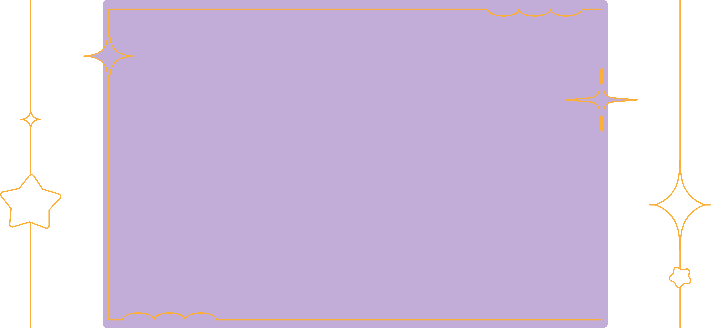
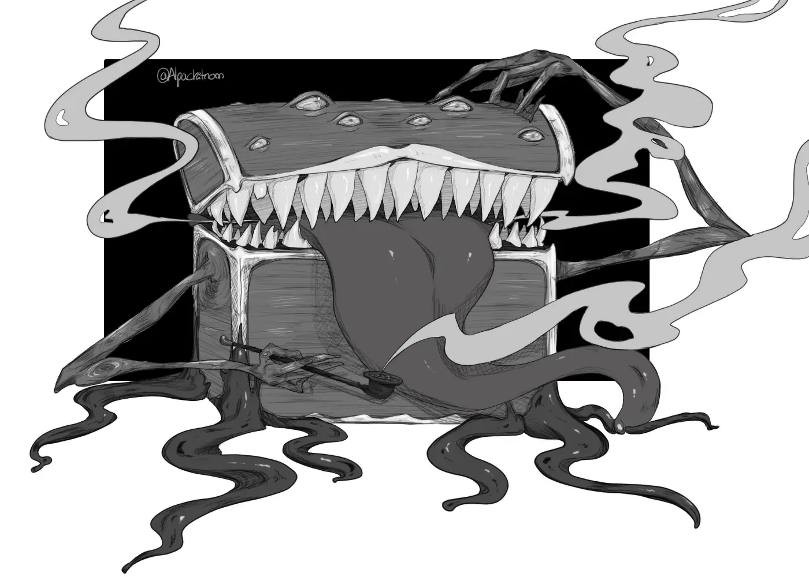
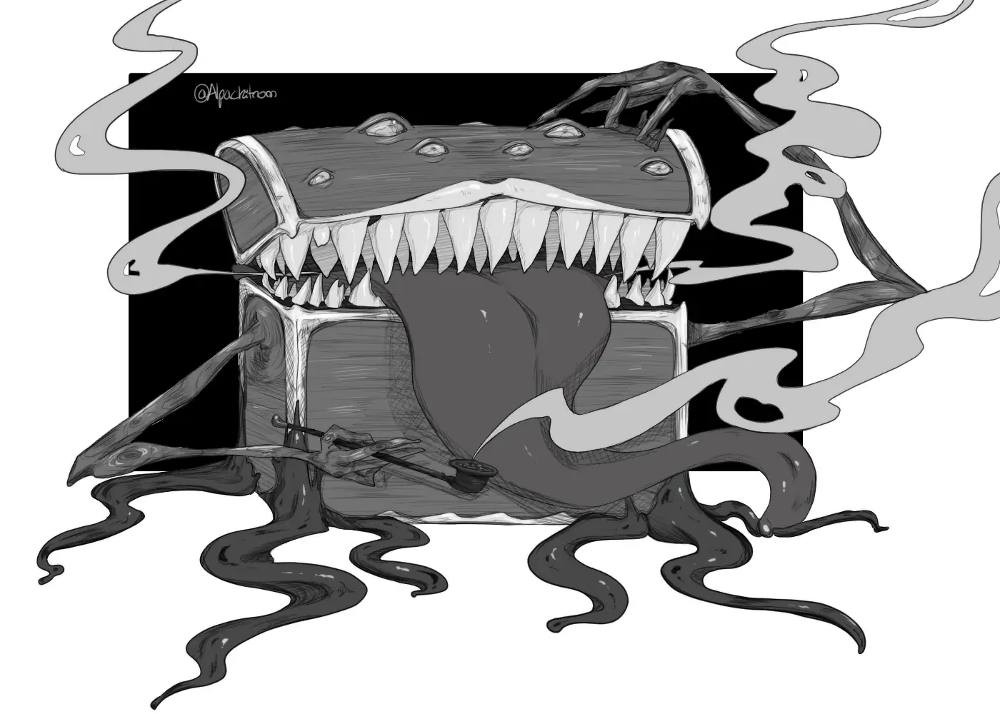
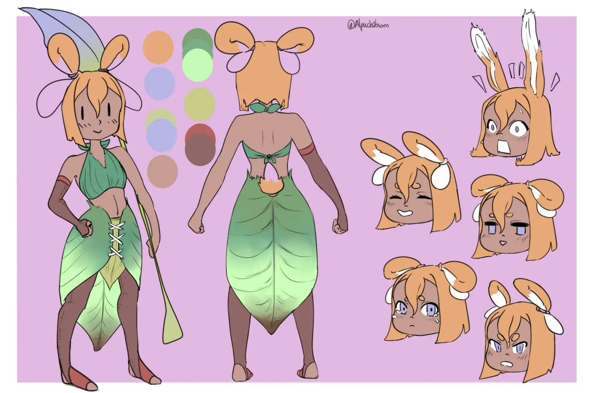
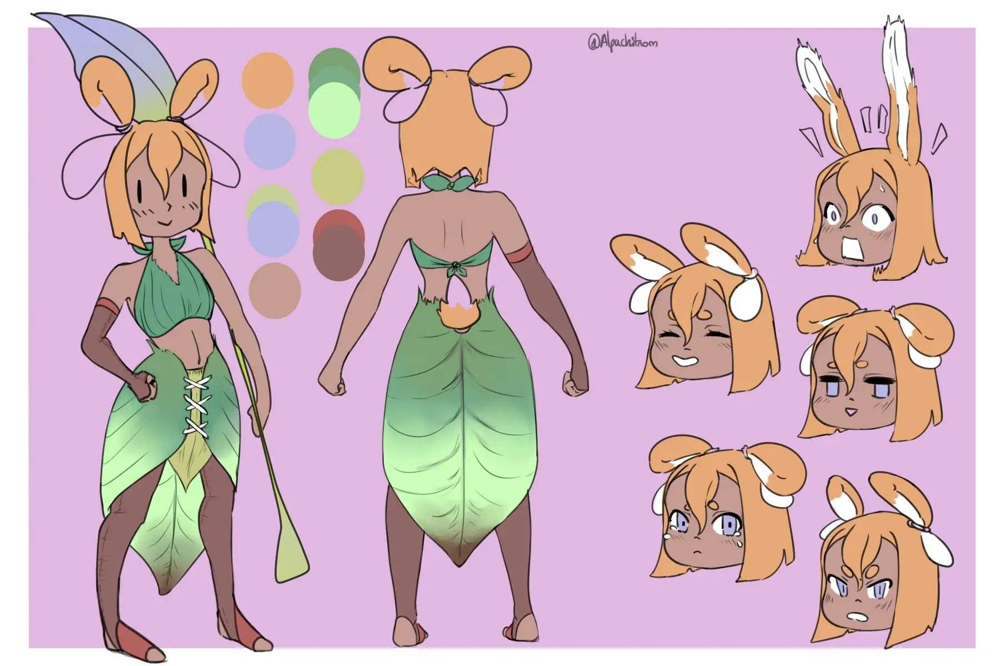

Bem-vinda(o) ao meu portfólio!
Aqui vais encontrar ilustrações
e projetos criativos.
Tudo o que faço tem um pouco de mim.
Espreita o que ando a criar!



Abaixo estão alguns dos meus projetos..
Faço ilustrações digitalmente em temas variados, mas o meu foco está no feminino e na criação de personagens.
Também tenho alguns projetos de UI/UX que fazem parte deste portfólio.
Além disso partilho a minha arte noutras redes sociais, todos os links estão no meu Carrd.
Illustrações


 


 

×

Design